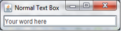
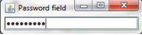
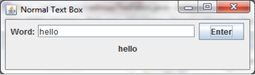
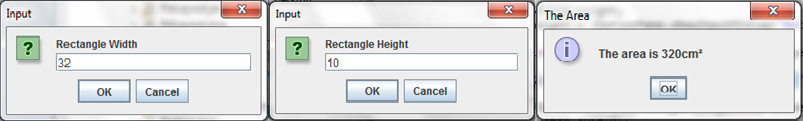

Text Fields
In Java there are are 3 main types of text field - the normal textfield, the password field and the drop-down menu. What these are and how they work will be explained in this chapter. As an introduction, if there is any doubt as to what a text field is, a text field is a box that lets the user input a small amount of text. As a passing statement, these textfields interact with the layouts introduced in that last part just as buttons do.
JTextFields
What a normal text field is was just explained, it is a way for the user to input text. To create these you will have to copy out the following:
import javax.swing.JFrame;
import javax.swing.JTextField;
public class TexFields extends JFrame{
JTextField normal = new JTextField();
// The empty brackets can be filled with an integer to dictate the preffered size of the text field.
public TexFields() {
add(normal);
setTitle("Normal Text Box");
setVisible(true);
setDefaultCloseOperation(EXIT_ON_CLOSE);
pack();
}
public static void main(String[] args) {
new TexFields();
}
}
This displays a normal text field that text can be inputted into. Inside the brackets on Line 5 you can enter a few things. If you enter a string, you will create the background text that you first get when you run the program. If you were to enter an integer, this would dictate the size of the text field. You can enter both of course, and you would do so using the following code:
JTextField normal = new JTextField("Your word here", 15);
This would output the following:

Ex 1
Copy the code above and run it. Try to input some text. If you wish, put an integer into line 5 to dictate the size of the text field. It should look like the following:
JPasswordFie
Whenever you have to enter a password into a website, what you type in is obscured by black dots. This is a result of the password field. To create this you will have to use the above syntax, but will have to import and use JPasswordField.
Ex 2
Create a password field and see what happens when you try to type something in. Your finished product should look something like this:

The Drop-down Menu
A drop-down menu is a text field that lets you choose from a preset list of options that, quite literally, drop down when you click a button. To do this you will have to import and use JComboBox. To use this you will have to declare an array which includes all of the options. You can see how to declare an array in Chapter 1 Part VI. You will then have to put the name of the array in the parameters that the JComboBox has. In other words:
JComboBox Doctor_Who = new JComboBox(monsters);
//where 'monsters' is the name of a String array.
Ex 3
Create a drop-down menu with 5 different options. It does not have to be about Doctor Who and/or monsters. Your end result should look something like this (bear in mind that I've used aliens from Doctor Who):

Accepting user input
It's all very well having a text field on your screen, but it has no purpose if you cannot use what the user has inputted. Therefore for your text field to be fully working, you need to be able to accept and use these inputs. there are two main ways to do this, one using the above formats of text field; and one which uses a whole new format i.e. The JOptionPane. I will explain both of these in detail shortly.
Using JTextFields
It can be very easy to store a user's input and manipulate it. For example you can display the user's input on the screen. To do this, all you really need to do is set a variable to be the input, and then set a label to be that variable. In other words, you can use the following code inside the actionPerformed method:
public void actionPerformed(ActionEvent evt) {
String text = normal.getText();
label.setText(text);
}
Add this to a button, text field and a label, and you can create something like the following:

This simply displays the user's input, but since normal.getText() stores the user's input, you could just as easily validate or manipulate the input.
Ex 4
Convert your code to work with a password field - What is outputted? See what happens with other text fields, or try to manipulate the user's input.
Using a JOptionPane
JOptionPanes are another option for accepting the user's input. These do not only work for manipulation however, they also could be used as a replacement for the JTextField itself. They actually look better. They also require very little code and can process inputs easily. To use a JOptionPane, you will first have to import it:
import javax.swing.JOptionPane;
These panes use a different syntax to a normal text field, and only require one line for code. To create a JOptionPane you simply need to declare a variable e.g. width and then type this in:
width = JOptionPane.showInputDialog("Width", "Enter the width");
//the first parameter is the title and the second is the background text.
This will create a pane, you don't have to add it, and it stores the input as soon as the OK button is pressed. For that matter, it comes pre-styled and with its own buttons. Whereas you would have to set a title; set the frame to be visible; set a DefaultCloseOperation etc with a JTextField, you don't have to do any of that with JOptionPanes. You can therefore use these easily. Since they can be used to manipulate inputs, they could be compared to methods. For example, you could use a method to work out the area of a rectangle based on two inputs in Eclipse. This, however, looks bad, and the user needs to have a GUI to work with. So, a JOptionPane could be used as a method that looks good and does not require access to the base code. To work out the area of a rectangle based on the inputs the user gives using a JoptionPane can be done with this code:
public static void main(String[] args) {
String width = JOptionPane.showInputDialog("Rectangle Width", "Enter the width of your rectangle");
//sets a variable to be the width
String height = JOptionPane.showInputDialog("Rectangle Height", "Enter the height of your rectangle");
//sets a variable to be the heiht
int area = Integer.parseInt(width) * Integer.parseInt(height);
//converts the strings into ints and works out the area
String answer = "The area is " + area + "cm²";
//sets a variable to be what the JOptionPane will output
JOptionPane.showMessageDialog(null, answer, "The Area", JOptionPane.INFORMATION_MESSAGE);
// sets what the JOptionPane will output
// null is needed
// answer is the variable; "The Area" is the title and the final part is the image shown (see example)
System.exit(0); //Closes the Pane on exit.
}
This will create three JOptionPanes; the first two will store the variables and the last will act on those variables. This particular piece of code outputs the following:

Ex 5
Look what happens when you change INFORMATION_MESSAGE to ERROR_MESSAGE, PLAIN_MESSAGE, QUESTION_MESSAGE and/or WARNING_MESSAGE.
Ex 6
Write a program using JOptionPanes to outputs a person's full name. Have the user input enter their first name, their middle name and their family name. If they don't have a middle name, leave that pane empty.
Ex 7
Write a program using JOptionPanes to work out the area and circumference of a circle with the radius having been inputted. HINT: the area of a circle is πr² (π is 3.14) and the circumference is 2πr.